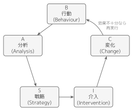
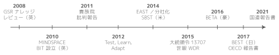
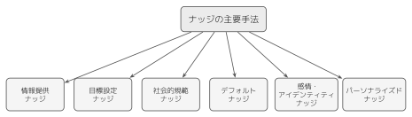

はじめに
我々は日々，無数の意思決定を行いながら生活している．朝起きて何を食べるか，どの交通手段で通勤・通学するか，昼食をどこで取るか．こうした日常的な判断から，どの大学に進学するか，どの企業に就職するか，老後の資金をどのように準備するかといった人生を左右する重大な選択まで，意思決定は人間の生活のあらゆる場面に遍在している．こうした意思決定の多くは，結果が確実には予測できない状況，すなわち不確実性のもとで行われている．
伝統的な経済学は，このような状況における人間の行動を分析するにあたって，ホモ・エコノミクス（homo economicus）と呼ばれる合理的な経済主体を前提としてきた（Mas-Colell, Whinston, and Green 1995）．ホモ・エコノミクスは，すべての利用可能な情報を正確に処理し，自己の効用を最大化する選択を常に行うことができる理想化された存在である．しかし，現実の人間の行動を観察すると，この仮定は必ずしも妥当ではないことが明らかになる．その背景には，サイモンが指摘した限定合理性（bounded rationality）がある．人間は，時間・情報・計算能力の制約のもとで判断しており，あらゆる選択肢を吟味した上で最適解を選ぶことはできない（Simon 1955）．サイモンの限定合理性は，計算資源の制約ゆえの「満足化」を指摘するものであった．これに対しカーネマンとトゥベルスキーは，判断が特定の系統的バイアスに従うことを実証的に示した．両者は問題意識を共有しつつも，別個の研究プログラムとして展開してきた．人間は時として，論理的に考えれば明らかに不利な選択をし，同じ情報でも提示の仕方によって異なる判断を下し，目先の利益に惑わされて長期的な利益を犠牲にする（Kahneman 2003）．このような「合理性からの逸脱」を体系的に研究し，より現実に即した人間像に基づいて経済現象を理解しようとする学問が，行動経済学（behavioral economics）である（C. F. Camerer and Loewenstein 2004）．
行動経済学は，こうした知見を単に学術的関心にとどめるのではなく，人々の行動をより望ましい方向へと導く実践的な手法として応用する道を切り拓いた．その中核をなすのがナッジ（nudge）という概念である．ナッジとは，選択の自由を維持しながら，人々がより良い選択を行うように「そっと後押し」する手法を指す（Thaler and Sunstein 2008）．本書は，行動経済学の知見を活用したナッジの理論と実践，そしてそれを公共政策に応用する行動公共政策（behavioral public policy）の全体像を体系的に学ぶための教科書である．
本章では，まずナッジと行動公共政策の基本的な考え方を概観した上で，この分野を学ぶ意義について論じる．
1 ナッジとは何か
ナッジの定義と選択アーキテクチャ
ナッジの概念は，経済学者のリチャード・セイラー（Richard H. Thaler）と法学者のキャス・サンスティーン（Cass R. Sunstein）が2008年に提唱したものである．両者は，共著『Nudge: Improving Decisions about Health, Wealth, and Happiness』において，この概念を体系的に示した（Thaler and Sunstein 2008）．セイラーとサンスティーンによれば，ナッジとは「選択を禁止することも，経済的インセンティブを大きく変えることもなく，人々の行動を予測可能な方向に変える，選択アーキテクチャのあらゆる側面」と定義される．セイラー自身は，のちのノーベル賞受賞講演において，行動経済学が伝統的経済学の周縁に置かれた異端の学説から，政策に直接応用される主流の分析枠組みへと発展してきた経緯を振り返っている（Thaler 2018）．ナッジという概念は，こうした行動経済学の理論的蓄積が公共政策という実践の場に接続された，一つの到達点として位置づけられる．
ここで重要なのは，選択アーキテクチャ（choice architecture）という概念である（Johnson et al. 2012）．選択アーキテクチャとは，人々が選択を行う際の環境の設計を指す．我々が日常生活で行うあらゆる選択は，何らかの環境のもとで行われている．スーパーマーケットにおける商品の配置，保険の申込書のフォーマット，ウェブサイトのインターフェースデザイン，学校の食堂における食品の並べ方は，いずれも選択アーキテクチャの一部である．そして，選択アーキテクチャの設計次第で，人々の選択は大きく変わり得る．
たとえば，カフェテリアにおいて健康的な食品を目の高さに配置し，不健康な食品は手の届きにくい場所に配置すると，健康的な食品の消費が有意に増加することが実証研究によって示されている（Hanks, Just, and Wansink 2013）．この場合，不健康な食品の選択を禁じているわけではなく，価格を変えているわけでもない．単に食品の配置という選択アーキテクチャを変えただけで，人々の選択が変化するのである．これがナッジの典型例である．
ナッジの重要な特徴は以下のとおりである．第一に，ナッジは選択の自由を保持する．人々は望めばナッジによって促される行動とは異なる選択を行うことができる．第二に，ナッジは，法律による義務づけや罰則，補助金や課税といった手段とは異なり，規制で選択を禁じたり，経済的インセンティブを大きく変えたりせずに働きかける．第三に，ナッジは低コストで実施可能である．選択環境の微小な変更で大きな行動変容を実現できる場合が多い．最後に，ナッジは行動経済学が明らかにした人間の認知的特性に基づいて設計される．現状維持バイアス，損失回避性，社会的規範への同調傾向など，人間に固有の心理的傾向を活用する．
NUDGESフレームワーク
セイラーとサンスティーンは，効果的なナッジの設計原則をNUDGESというアクロニムにまとめている（Thaler and Sunstein 2008）（表1.1）．NUDGESは以下の6つの原則から構成される．
第一に，iNcentives（インセンティブ）である．ナッジの設計では，対象者が直面するインセンティブ構造を正しく理解することが出発点となる．ここでいうインセンティブとは，金銭的な報酬や罰則に限定されるものではなく，心理的な動機づけや社会的な報酬をも含む広い概念である．人々がある行動を選択する際にどのような便益とコストを認識しているかを把握したうえで，本人が見落としている便益や費用を，金額などの形で見えるようにする．たとえば，エネルギー消費を削減する行動の便益は，月々の電気料金の節約という形で可視化できるが，多くの人はその金額を正確には認識していない．消費電力をリアルタイムで金額に換算して表示することで，省エネ行動を促進できる．
第二に，Understand mappings（マッピングの理解）である．人々は，選択肢とその結果の対応関係（マッピング）を正確に理解できない場合がある．たとえば，退職後に必要な貯蓄額を具体的な生活水準に結びつけて理解することは多くの人にとって困難である．選択肢と結果の対応関係をわかりやすく提示することは，人々がより適切な選択を行うための支援となる．
第三に，Defaults（デフォルト設定）である．デフォルトとは，個人が積極的に選択を行わない場合に自動的に適用される選択肢を指す．人間には現状維持バイアスがあるため，デフォルトの設定は人々の最終的な選択に極めて大きな影響を与える．たとえば，退職貯蓄プランへの自動加入制度や，臓器提供のオプトアウト方式は，デフォルトの力を活用した代表的なナッジである．
第四に，Give feedback（フィードバックの提供）である．人々が自身の行動の結果を適時に知ることができれば，行動の改善が促進される．スマートメーターによるエネルギー消費量の即時表示や，クレジットカードの利用状況の通知などが，フィードバックを活用したナッジの例である．
第五に，Expect error（エラーの予期）である．人間は間違いを犯す存在であることを前提として，エラーが生じにくく，生じた場合にも重大な結果に至らないシステムを設計する．ATMにおいてカードを取り出さないと現金が出てこない設計は，カードの取り忘れというエラーを予防するための仕組みである．
最後に，Structure complex choices（複雑な選択の構造化）である．選択肢が多すぎると，人々は選択そのものを回避したり，不適切なヒューリスティクスに頼ったりする傾向がある（Iyengar and Lepper 2000）．選択肢を適切にカテゴリ化し，段階的に絞り込めるように構造化することで，人々がより良い選択を行いやすくなる．
もっとも，選択肢が多いほど満足度や購買意欲が低下するという選択過剰効果（choice overload）の頑健性については，慎重な検討を要する．チェルネフら（Chernev, Böckenholt, and Goodman 2015）は，99件の観測結果（参加者計7,202名）を対象にメタ分析した．その結果，選択肢数が満足度や選択行動に及ぼす平均的な効果は，全体としてはほぼゼロであった．しかし効果は単純に消失するのではなく，条件によって姿を変える．選択集合の複雑さ，決定課題の困難さ，選好の不確実性，決定目標という四つの条件のいずれかが強まるほど，選択過剰効果は明確に現れる．著名なジャム実験（Iyengar and Lepper 2000）が示した知見は，選択肢を減らせば常に満足度が上がるという単純な図式では捉えられない．どの条件で選択の負担が生じるかを見極めることこそが，NUDGESの「S」（複雑な選択の構造化）の出発点となる．
以上6つの原則を表1.1に整理する．
| 原則 | 内容 |
|---|---|
| iNcentives（インセンティブ） | 対象者が直面するインセンティブ構造を正しく理解し，認知バイアスによって見えにくくなっている便益・コストを可視化する |
| Understand mappings（マッピングの理解） | 選択肢とその結果の対応関係を，わかりやすい形で提示する |
| Defaults（デフォルト設定） | 現状維持バイアスを踏まえ，望ましい選択肢をあらかじめ初期設定として組み込む |
| Give feedback（フィードバックの提供） | 行動の結果を適時に知らせ，行動の改善を促す |
| Expect error（エラーの予期） | 人は誤りを犯す存在であることを前提に，エラーが生じにくく，生じても重大な結果に至らない設計とする |
| Structure complex choices（複雑な選択の構造化） | 選択肢を適切にカテゴリ化し，段階的に絞り込めるように構造化する |
NUDGESフレームワークは，ナッジを設計する際の実践的な指針として，政策立案者や組織設計者に広く活用されている．
リバタリアンパターナリズムの思想
ナッジの思想的基盤をなすのが，リバタリアンパターナリズム（libertarian paternalism）という考え方である（Thaler and Sunstein 2003）．この概念は，一見すると矛盾を含んでいるように見える．リバタリアニズム（自由至上主義）は，個人の自由と選択を最優先し，政府介入を最小限にすべきであるとする立場である．一方，パターナリズム（温情主義）は，個人の利益のために本人の意思に反してでも介入することが正当化されるとする立場である．
しかし，セイラーとサンスティーンは，この二つの立場は両立可能であると主張する（Thaler and Sunstein 2008）．リバタリアンパターナリズムとは，選択の自由を維持しながら（リバタリアン），人々がより良い選択をできるように選択アーキテクチャを設計する（パターナリズム）という立場である．ナッジによって促される行動を拒否する自由は常に保障されており，その意味でリバタリアンの原則は守られている．同時に，行動経済学の知見に基づいて，人々が「自分自身にとって望ましい」と判断するであろう方向へ選択環境を設計するという意味で，パターナリスティックな要素も含まれている．
同様の発想は，セイラーとサンスティーンと同時期に提示されていた非対称的パターナリズム（asymmetric paternalism）という考え方にも見られる．キャメラーらは，判断を誤りやすい人には利益を与え，合理的に自己決定できる人にはほとんど負担を課さない介入であれば，パターナリズムに対する伝統的な批判は当てはまらないと論じた（C. Camerer et al. 2003）．ナッジの多くは，まさにこの非対称性を満たすように設計されている．合理的な消費者にとっては無視してもよい程度の小さな仕掛けでありながら，判断を誤りやすい消費者にとっては選択を左右するだけの効果を持つ．この位置づけを，選択の自由の維持／制限と，本人の利益のための介入の強弱という2軸で整理すると，図1.1のようになる．
リバタリアンパターナリズムの正当性をめぐっては，さまざまな議論が展開されてきた．賛成論者は，選択アーキテクチャはいかなる場合にも完全に中立ではあり得ないのだから，人々の福利を改善する方向にそれを設計することは当然のことであると論じる（Sunstein 2014）．一方，批判論者は，何が「より良い選択」であるかを誰が決定するのかという問題や，ナッジが人々の自律性を静かに侵食する危険性を指摘している（Bovens 2009; Hausman and Welch 2010）．リバタリアンパターナリズムをめぐるこうした倫理的・政治哲学的な論争は，本書の最終章において改めて詳しく検討する．
2 行動公共政策の展開
BASICフレームワーク
ナッジを公共政策に実装するための体系的な手法として，OECDが提唱したBASICフレームワークがある（OECD 2019）．BASICは，Behaviour（行動），Analysis（分析），Strategies（戦略），Intervention（介入），Change（変化）の頭文字を取ったものであり，行動インサイトを政策に適用するための5段階のプロセスを示している．
第一段階の「行動」（Behaviour）では，政策課題に関連する行動を具体的に定義し，現状の行動パターンを詳細に把握する．「人々が望ましい行動をとっていない」という漠然とした問題意識を，「誰が」「いつ」「どのような文脈で」「どのような行動をとっているか（あるいはとっていないか）」という具体的な行動記述に落とし込むことが，この段階の目的である．
第二段階の「分析」（Analysis）では，第一段階で特定した行動の背景にある心理的・社会的・制度的要因を分析する．行動経済学の知見を活用して，なぜ人々が望ましい行動をとらないのかを理解することが，この段階の核心である．たとえば，現状維持バイアスのために変化を避けているのか，情報の不足や複雑さのために適切な選択ができないのか，社会的規範の影響で望ましくない行動が維持されているのかなど，行動の阻害要因を特定する．
第三段階の「戦略」（Strategies）では，分析結果に基づいて介入の方向性を決定する．どのようなタイプのナッジが効果的であるかを検討し，具体的な介入デザインを策定する．この段階では，ナッジの種類（デフォルト変更，情報提供，社会的規範の活用など）の選択とともに，介入のタイミングや対象者の設定も行う．
第四段階の「介入」（Intervention）では，策定した戦略に基づいて実際に介入を実施する．この段階で重要なのは，介入の効果を科学的に検証できるように設計することである．ランダム化比較試験（RCT）などの実験的手法を用いて，介入の因果効果を厳密に測定することが推奨される．
第五段階の「変化」（Change）では，介入の結果を評価し，行動変容が実際に生じたかどうかを検証する．効果が確認された場合には対象範囲の拡大を検討し，効果が不十分であった場合にはBASICのサイクルを再度回して改善を図る．BASICの5段階は，図1.2に示すように，一方向のプロセスではなく，最後の段階から最初の段階へと再び戻る循環構造をなしている．

BASICフレームワークは，ナッジの設計を場当たり的なものではなく，エビデンスに基づく体系的なプロセスとして位置づける点に大きな意義がある．行動インサイトを公共政策に適用するための国際的なスタンダードとして，多くの国の政策立案において参照されている．
FEASTアプローチ
BASICフレームワークとともに，行動科学的な観点から政策や介入を設計するための実践的な指針として，サンスティーンがBITのEASTにFun（楽しさ）を加えて提唱したFEASTアプローチがある（Zulfiqar 2021）．FEASTは，Fun（楽しさ），Easy（簡単さ），Attractive（魅力），Social（社会性），Timely（適時性）の頭文字を取ったものであり，英国の行動インサイトチーム（Behavioural Insights Team，BIT）が提唱したEASTフレームワーク（Behavioural Insights Team 2014）を拡張した概念である．
「楽しさ」（Fun）は，行動変容の介入にゲーミフィケーションや遊びの要素を取り入れることで，対象者の内発的動機づけを高めるという原則である．たとえば，階段の利用を促進するために，階段をピアノの鍵盤のように設計して踏むと音が鳴るようにしたストックホルムの「ピアノ階段」は，楽しさの原則を活用した好例である．
「簡単さ」（Easy）は，望ましい行動を可能な限り容易にするという原則である．行動経済学の研究は，わずかな手間や障壁であっても，行動を大きく抑制することを示している（Madrian and Shea 2001）．退職貯蓄プランで加入を初期設定（自動加入）に変えると加入率が大きく上昇するのは，加入の手間を減らすと同時にデフォルトを変えた介入であり，この原則の適用例でもある．
「魅力」（Attractive）は，介入のメッセージやデザインを対象者にとって魅力的なものにするという原則である．注意を引くビジュアルデザイン，パーソナライズされたメッセージ，インセンティブの適切な設計などが含まれる．
「社会性」（Social）は，人間が社会的存在であることを活用し，社会的規範や他者の行動に関する情報を介入に組み込むという原則である．「あなたの近隣住民の多くは期限内に納税しています」というメッセージが納税率を向上させた英国BITの実験（Hallsworth et al. 2017）は，社会性の原則を活用した代表的な事例である．
「適時性」（Timely）は，介入のタイミングを最適化するという原則である．人々が意思決定に最も受容的なタイミング—たとえば，ライフイベントの転換期や習慣的な行動が一時的に中断される時期—に介入を行うことで，効果を最大化できる．
FEASTアプローチは，BASICフレームワークの「戦略」段階において具体的な介入デザインを策定する際の実践的なチェックリストとして機能する．介入が「楽しく」「簡単で」「魅力的で」「社会的な要素を含み」「適切なタイミングで提供される」ものであるかどうかを確認することで，介入の効果を高めることができる．
フィールド実験とEBPM
ナッジを含む行動科学的介入の効果を科学的に検証するための方法として，フィールド実験（field experiment）が重視されている（List 2011）．フィールド実験とは，実際の社会環境の中で，ランダム化比較試験（RCT）の手法を用いて介入の因果効果を検証する研究手法である．
ランダム化比較試験では，対象者を介入群（treatment group）と対照群（control group）にランダムに割り当て，介入群にのみナッジ等の介入を実施する．ランダム割り当てによって，介入前の属性は観察可能なものも観察不可能なものも，期待の上で両群の間でそろう．したがって，介入後に両群の平均的な結果に生じる差は，介入の因果効果の推定値と解釈できる（Angrist and Pischke 2009）．ただし，一つの標本では偶然の偏り（標本誤差）が残るほか，脱落や介入の波及があれば解釈が歪むため，これらの点検が欠かせない．
フィールド実験は，ラボ実験と比較して外的妥当性（実験結果の一般化可能性）が高いという利点を持つ一方で，実施にあたっては倫理的配慮，政策当局との連携，大規模なサンプルの確保など，多くの実践的課題を伴う．しかし，政策効果の厳密な検証という観点からは，フィールド実験に基づくエビデンスは最も信頼性の高いものとされている．
英国の行動インサイトチーム（BIT）は，フィールド実験を大規模に実施した先駆的な組織である（Halpern 2015）．BITは，政府の通知文のA/Bテストにより，社会的規範メッセージの追加が税金の納付率を有意に向上させることを示した（詳細は本節末尾の事例を参照）．また，臓器提供登録のウェブページにおけるメッセージの変更が，登録率に大きな影響を与えることも実証した．こうした実験的エビデンスの蓄積は，行動科学が「勘や経験」に基づく政策立案から，エビデンスに基づく政策立案への転換を促す原動力となった．
この流れの中で注目されているのが，EBPM（Evidence-Based Policy Making，エビデンスに基づく政策立案）である（Cairney 2016）．EBPMとは，政策の企画立案や実施において，政策効果の測定に重要な関連を持つ情報や統計等のエビデンスを可能な限り活用して，政策の有効性を高め，国民の信頼確保に資する取り組みを指す．ナッジの実証研究は，フィールド実験という厳密な方法論によって政策効果のエビデンスを生成する点で，EBPMの実践そのものであると言える．
日本においても，2017年に環境省を事務局として日本版ナッジ・ユニット（Behavioral Sciences Team，BEST）が発足し，環境省のナッジ事業を含む複数の省庁でナッジを活用した政策立案が推進されている（環境省 2017）．地方自治体レベルでも，健康診断の受診勧奨，ごみの分別促進，省エネ行動の促進など，さまざまな領域でナッジの実証実験が行われるようになっている．
ナッジ・ユニットの国際的展開
この展開を知ることで，ナッジが一部の国の流行ではなく制度化された実践であることが分かる．BITの設立は，突如として現れたものではない．英国では2008年，当時の労働党政権下で政府の社会調査部門（Government Social Research，GSR）が，既存の行動変容モデルを体系的に整理したナレッジレビューを公表した（Darnton 2008）．これがBIT発足の理論的下地となった．2010年には，Institute for GovernmentとCabinet Officeが共同で，行動に影響を与える九つの要因を整理したMINDSPACEフレームワークを公表した（Dolan et al. 2012）．同年，保守・自由民主連立政権のもとで内閣府内に世界初の政府ナッジ・ユニットであるBIT（Behavioural Insights Team）が設立された（Halpern 2015）．
もっとも，ナッジ・ユニットの設立は当初から手放しで歓迎されたわけではない．2011年，英国議会貴族院科学技術委員会は報告書「Behaviour Change」を公表した．同報告書は，ナッジ単独では複雑な行動変容課題に対処するエビデンスが不十分であると指摘し，規制や経済的インセンティブとの組み合わせの必要性を論じた（House of Lords Science and Technology Select Committee 2011）．この批判は，ナッジを万能の政策手段として位置づけることへの警鐘となった．
BITはその後も方法論の整備を進めた．2012年には，政策評価にランダム化比較試験を組み込む手順を示した『Test, Learn, Adapt』を公表した（Haynes et al. 2012）．2014年には，実務者向けに簡略化したEASTフレームワークを発表するとともに，内閣府から独立した社会的目的会社（social purpose company）として分社化した（Behavioural Insights Team 2014）．
ナッジ・ユニットの設立は英国にとどまらなかった．米国では2014年，ホワイトハウス科学技術政策局内に社会・行動科学チーム（Social and Behavioral Sciences Team，SBST）が組成された．翌2015年には大統領令13707号が発令され，行動科学の知見を用いた政策実装が連邦機関に義務づけられた（The White House 2015）．豪州でも2016年，首相内閣省内に行動経済学チーム（Behavioural Economics Team of the Australian Government，BETA）が設立され，医療・エネルギー・サイバーセキュリティ等の分野で多数のランダム化比較試験を実施している（Behavioural Economics Team of the Australian Government (BETA) 2019）．日本でも2017年，環境省を事務局として日本版ナッジ・ユニット（BEST）が発足し，この国際的な潮流に加わった（環境省 2017）．
さらに2010年代半ば以降，行動インサイトの活用は各国政府を超えて国際機関レベルにも広がった．世界銀行は2015年の『世界開発報告2015：マインド・社会・行動』で，自動的思考・社会的思考・メンタルモデルという三つの枠組みを開発課題に応用した（World Bank 2014）．OECDは2017年，100件を超える応用事例を収集した報告書を刊行した（OECD 2017）．国連も2021年，25の国連機関における活用状況を横断的に調査した報告書を公表している（UN Innovation Network 2021）．行動公共政策は，もはや一部の先進国に限定された取り組みではなく，国際的な政策実践の標準へと変容しつつある．細かな年次と各国・各機関の動きは図1.3に譲り，ここでは国際的展開の骨格のみを記した．

3 ナッジの主要手法
本書では，ナッジの主要手法をいくつかの類型に分けて体系的に検討する．以下では，各類型の概要を紹介する．本節で扱う6類型の全体像を図1.4に示す．

情報提供ナッジ
情報提供ナッジ（information nudge）とは，情報の提示方法を工夫することで人々の行動変容を促す手法である（Sunstein 2014）．行動経済学の研究は，同一の情報であっても，その提示方法（フレーミング）によって人々の意思決定が大きく異なることを繰り返し示してきた（Tversky and Kahneman 1981）．
情報提供ナッジの代表的な手法として，利得・損失フレーミングがある．プロスペクト理論に基づけば，人間は同額の利得と損失に対して非対称的な反応を示し，損失の心理的インパクトは利得のそれよりも大きい（Kahneman and Tversky 1979）．この損失回避性を活用して，たとえば「省エネで年間1万円節約できます」というメッセージよりも「省エネしないと年間1万円損をしています」というメッセージの方が省エネ行動を効果的に促進することが報告されている．
属性フレーミングは，同じ情報の異なる側面を強調する手法である．たとえば，ひき肉を「赤身75%」と表示するか「脂肪25%」と表示するかは，同じ組成を異なる側面から表しているにすぎないが，前者の方が品質の評価が高くなる（Levin, Schneider, and Gaeth 1998）．時間フレーミングは，時間単位の操作によって知覚を変化させる手法であり，「1日あたり100円」と「年間36,500円」のように，同じ金額を異なる時間単位で表現することで，支払意思額に影響を与えることが示されている．
情報提供ナッジでは，情報の簡素化と視覚化も重要な要素である．複雑な情報をわかりやすく整理し，グラフやアイコンなどの視覚的要素を活用して直感的に理解できるように提示することで，人々がより適切な意思決定を行えるようになる．栄養成分表示における信号機式ラベリング（赤・黄・緑のカラーコードによる表示）は，情報の視覚化を活用したナッジの代表例である．
目標設定ナッジ
目標設定ナッジ（goal-setting nudge）とは，個人が明確な目標を設定し，それに向けた行動計画を具体化することで行動変容を促す手法である（Locke and Latham 2002）．行動経済学と心理学の研究は，具体的で測定可能な目標を持つことが，パフォーマンスの向上と行動の持続に有意な効果を持つことを示している．
目標設定ナッジにおいて重要な概念の一つが，実行意図（implementation intention）である（Gollwitzer 1999）．実行意図とは，「いつ」「どこで」「どのように」目標に向けた行動を実行するかを事前に具体的に計画することを指す．「もっと運動する」という漠然とした目標ではなく，「毎週水曜日の朝7時に近所の公園を30分ジョギングする」というように，行動の具体的な条件を事前に定めておくことで，実行の可能性が大幅に高まることが実証されている．
公的コミットメント（public commitment）も，目標設定ナッジの重要な要素である．目標を他者に宣言することで，社会的な圧力が生じ，目標達成への動機づけが強化される．慈善寄付の文脈では，寄付の誓約を事前に求めることで実際の寄付率が向上することが示されている．また，友人同士でジム通いを約束するピアコミットメントが出席率を有意に向上させることも報告されている．相互監視と社会的サポートの両面が作用するためである．
目標設定では，SMART原則—すなわち，具体的（Specific），測定可能（Measurable），割り当て可能（Assignable，文献によってはAchievable＝達成可能とされることもある），現実的（Realistic），期限付き（Time-bound）—に基づいた目標の設計が推奨される．曖昧な目標よりも具体的な目標の方が行動変容を促進し，進捗の可視化がさらにその効果を高めることが知られている．
社会的規範ナッジ
社会的規範ナッジ（social norm nudge）は，人々が周囲の他者の行動を参照点として意思決定を行う傾向を活用した手法である（Cialdini, Reno, and Kallgren 1990）．人間は社会的存在であり，他者の行動や社会的に期待される行動に同調する強い傾向を持っている．社会的規範ナッジは，この傾向を活用して行動変容を促す．
社会的規範には，いくつかの類型が存在する（Cialdini, Reno, and Kallgren 1990）．記述的規範（descriptive norm）は，実際に多くの人がとっている行動を示すものである．「この地域の80%の住民が期限内に税金を納めています」というメッセージは，記述的規範の例である．命令的規範（injunctive norm）は，社会的に承認される行動や期待される行動を示すものであり，「節電は社会的責任です」というメッセージがこれに該当する．動的規範（dynamic norm）は，規範の変化の方向性を示すものであり，「昨年と比べて30%多くの人が植物ベースの食事を選ぶようになっています」というメッセージのように，行動のトレンドを伝える（Sparkman and Walton 2017）．さらに，個人的規範（personal norm）は，「自分はそうすべきだ」という内面化された道徳的義務感を指し，他者の行動や承認に関わる社会的規範とは区別される（Schwartz 1977）．「環境を守ることはあなた自身の責任です」のように，本人の義務感に訴えるメッセージがこれに当たる．なお，以上の例に含まれる数値は説明のための仮のものである．
社会的規範ナッジの効果を示す代表的な研究として，Opower社のホームエネルギーレポートがある（Allcott 2011）．このレポートでは，各世帯に対して近隣住民との電力消費量の比較情報が提供され，平均的な消費者よりも多くの電力を消費している世帯の消費量が有意に減少することが示された．
社会的規範に関連する選好として，バンドワゴン効果とスノッブ効果にも触れておく必要がある．バンドワゴン効果とは，多くの人が採用している選択肢をさらに多くの人が選択するようになる傾向であり，スノッブ効果とは，逆に多くの人が選択しているものを避ける傾向である．これらの効果は，社会的規範ナッジの設計において考慮すべき重要な要素である．
デフォルトナッジ
デフォルトナッジ（default nudge）は，初期設定を変更することで人々の選択を望ましい方向へ導く手法であり，最も強力かつ広く研究されているナッジの一つである（Johnson and Goldstein 2003）．人間の行動には現状維持バイアス（status quo bias）が存在し，変更にはコストがかかるという認知的・心理的慣性が作用するため，多くの人がデフォルトのままにとどまる傾向がある（Samuelson and Zeckhauser 1988）．
デフォルトナッジの効果を劇的に示した研究として，臓器提供の同意率に関する国際比較がある（Johnson and Goldstein 2003）．臓器提供を希望する場合に申し出る必要があるオプトイン方式の国（たとえばドイツ）では有効同意率が12.0%にとどまるのに対し，臓器提供を希望しない場合に申し出る必要があるオプトアウト方式の国（たとえばオーストリア）では99.98%に達する．ここでいう有効同意率は，制度上，提供に同意したとみなされる人の割合であり，実際の臓器提供率ではない．両国は文化的に類似しており，臓器提供に対する態度にも大きな差はないが，国際比較だけではデフォルトの因果効果を特定できない．同じ論文が行ったオンライン実験（161名）では，同じ質問をデフォルトだけ変えて尋ねると，同意率はオプトインで42%，オプトアウトで82%であり，デフォルトの設計そのものが選択を大きく動かすことが確かめられている．
退職貯蓄の分野でも，デフォルトの効果は顕著である．マドリアンとシェイ（Madrian and Shea 2001）の研究は，退職貯蓄プラン（401(k)）への加入をデフォルトとする自動加入制度が，加入率を大幅に向上させることを示した．セイラーとベナルツィ（Benartzi）が開発した「Save More Tomorrow」プログラム（Thaler and Benartzi 2004）は，将来の昇給時に貯蓄率を自動的に引き上げるというデフォルト設計を採用した．この設計により，現在バイアスの影響を受けやすい貯蓄行動の改善に成功している．
デフォルトが効果を持つメカニズムとしては，現状維持バイアスに加えて，努力の非対称性（わずかなトランザクションコストが決定的な影響を持つこと）と，暗黙の推奨（デフォルトが政策立案者の推奨として解釈される傾向）が指摘されている．特に専門知識が不足する領域では，デフォルトの設定が「推奨される選択」として認知される傾向が顕著である．
感情・アイデンティティナッジ
感情ナッジ（emotion nudge）は，人々の感情的反応を活用して行動変容を促す手法である（Lerner et al. 2015）．行動経済学の研究は，意思決定において感情が果たす役割の大きさを繰り返し示してきた．感情ヒューリスティック（affect heuristic）とは，感情的反応がヒューリスティックとして機能し，リスクや便益の評価に影響を与える現象を指す（Slovic et al. 2007）．
感情ナッジにおいて興味深いのは，リスク認知の文脈で恐怖アピールよりも希望や誇りといったポジティブな感情の方が持続的な行動変容を生む場合があるという知見である．また，予期的感情（anticipated emotion）—将来の後悔や満足を予期させること—が効果的な行動変容手段として活用されている．「買わなかったことを後悔するかもしれません」というメッセージは予期的後悔を喚起し，購買行動を促進する．
アイデンティティナッジ（identity nudge）は，個人が持つ集団アイデンティティや自己概念との整合性を活用する手法である（Akerlof and Kranton 2000）．「あなたのような〔職業/属性〕の方の多くが」というメッセージは，内集団規範（自分が所属すると感じる集団で共有される行動基準）との一致を促す設計であり，集団アイデンティティとの整合性が行動変容を促進する効果が確認されている．
パーソナライズドナッジとAIの活用
近年，人工知能（AI）技術の急速な発展に伴い，パーソナライズドナッジ（personalized nudge）への関心が高まっている（Matz et al. 2017）．パーソナライズドナッジとは，個人の特性—性格，選好，過去の行動パターン，文脈的要因など—に応じて最適化されたナッジを提供する手法である．
従来のナッジは，集団全体に一律に適用される画一的なアプローチが主流であった．しかし，ナッジに対する反応には大きな個人差があることが知られている（Bryan, Tipton, and Yeager 2021）．あるナッジが一部の人には効果的であっても，別の人には効果がないか，場合によっては逆効果となる可能性もある．機械学習の手法を用いて処理効果の異質性（heterogeneous treatment effects）を検出し，「誰にどのナッジが効くか」を特定することが，パーソナライズドナッジの中核的な課題である．
大規模言語モデル（LLM）の登場は，パーソナライズドナッジの可能性をさらに拡大している．たとえば，ChatGPTを用いて個人の性格特性（ビッグファイブ）や道徳基盤に応じたメッセージを自動生成すると，画一的なメッセージよりも説得力が高いと評価されることが，消費財の広告や気候変動対策を求める政治的な訴えなど複数の題材で示されている（Matz et al. 2024）．ただし，効果の大きさは小さく，メッセージの説得力に対する評価と実際の行動への効果は区別して検討する必要がある．AI技術とナッジの融合は，個人特性に応じた介入設計という，行動公共政策のこれまでにない研究領域を開きつつある．
ただし，パーソナライズドナッジにはプライバシーの問題，アルゴリズムの透明性，公平性の担保といった重大な倫理的課題が伴う．個人データを大量に収集・分析してナッジを最適化することは，操作的な介入へと容易に転化し得るため，適切なガバナンスの枠組みが不可欠である．
4 ナッジのダークサイド
スラッジ
ナッジが選択を容易にし，より良い行動を促進するものであるとすれば，スラッジ（sludge）はその対極に位置する概念である（Sunstein 2022）．スラッジとは，人々が望むものを得るのを妨げる，過大であったり正当化しにくかったりする手続き上の負担や摩擦を指す．意図的に設けられる場合に限らず，制度の複雑化や組織間の調整不足から生じることもある．ナッジが「そっと後押し」するものであるのに対し，スラッジは行動を妨害し，遅延させ，断念させるものである．
スラッジの典型例としては，行政手続きにおける過度に煩雑な書類作成の要求，サブスクリプションサービスの解約手続きの意図的な困難化，給付金や補助金の申請における必要以上に複雑なプロセスなどが挙げられる（Sunstein 2022）．スラッジは，対象者の時間と認知的資源を消費させることで，本来であれば受給資格のある給付を受け取ることを断念させたり，不要なサービスの解約を先延ばしにさせたりする効果を持つ．
スラッジは，しばしば「時間税」（time tax）と呼ばれ，特に時間的余裕のない低所得層により重い負担を課すことが指摘されている（Sunstein 2022）．形式的にはすべての人に同一の手続きを課す点で平等に見えるが，実質的にはリソースの乏しい人々に対してより大きな障壁となるという構造的な不平等を生み出すのである．このことは，スラッジが手続き的正義の観点からも問題を含んでいることを意味している．
ダークパターン
ウェブデザインやアプリのインターフェースにおけるスラッジとも言えるのが，ダークパターン（dark pattern）—近年ではデセプティブパターン（deceptive pattern）とも呼ばれる—である（Mathur et al. 2019）．ダークパターンとは，ユーザーを欺いたり，ユーザーの利益に反する行動をとらせたりするように意図的に設計されたインターフェースデザインを指す．
グレイら（Gray et al. 2018）は，ダークパターンの事例を分析し，以下の5つのカテゴリに分類している．第一に，Nagging（しつこい要求）は，繰り返し同じ要求を提示してユーザーを疲弊させ，最終的に要求に従わせる手法である．アプリの通知許可やプレミアム版へのアップグレードを何度も求めるポップアップがその例である．第二に，Obstruction（妨害）は，タスクの完了を意図的に困難にする手法であり，アカウント削除の手順を意図的に複雑にすることなどが該当する．続いて，Sneaking（こっそり紛れ込ませ）は，重要情報を隠蔽または遅延開示する手法であり，購入プロセスの最後に追加料金を表示することなどが含まれる．第四に，Interface Interference（インターフェースの操作）は，視覚的な階層やデザインを操作して誤クリックを誘発する手法であり，「同意する」ボタンを目立つ色にし，「拒否する」ボタンを目立たない色にすることなどがその例である．最後に，Forced Action（強制行動）は，本来不必要な行動をサービス利用の条件として強制する手法である．
ここまで見たナッジ・スラッジ・ダークパターンの三者の関係を，表1.2に整理する．
| 概念 | 選択への作用 | 典型例 |
|---|---|---|
| ナッジ | 選択の自由を保持しつつ，摩擦を減らして良い選択を後押しする | カフェテリアにおける健康的食品の配置変更 |
| スラッジ | 過大で正当化しにくい手続き上の負担・摩擦を課す（「時間税」） | 解約手続きの意図的な複雑化，煩雑な申請書類 |
| ダークパターン | 欺瞞的なインターフェース設計により，利用者の利益に反する行動へ誘導する | しつこい要求，妨害，こっそり紛れ込ませ等の5類型 |
ダークパターンは，ナッジの手法を人々の利益に反する方向に悪用したものと捉えることができ，自律性の侵害という根本的な倫理的問題を内包している．ダークパターンは人を単なる手段として扱い，目的として尊重しないという点で，カント的な倫理観からも根本的に非倫理的であると批判されている（Gray et al. 2018）．また，大量の個人データを扱う企業にはユーザーに対する信認義務（fiduciary duty，相手の利益を自己の利益より優先すべきとする法的責任）が生じるとダークパターン研究では議論されており，ダークパターンはこの信頼関係を裏切る行為であるとされる．
近年では，欧州連合のデジタルサービス法（Digital Services Act）や各国の消費者保護法において，ダークパターンに対する規制が強化されつつある．ナッジの研究者や実務者の間では，ナッジの知見が悪用されることを防ぐために，透明性，対称性，誠実性，アクセシビリティという原則からなる倫理的デザインの枠組みが検討されている．
5 本書を学ぶ意義
現代社会における行動変容の重要性
現代社会が直面する多くの課題—地球温暖化への対応，生活習慣病の予防，老後の資金準備，エネルギー消費の削減，ごみの削減とリサイクルの促進など—は，つまるところ人々の行動変容を必要としている．伝統的な政策手段である規制（法律による義務づけや罰則）と経済的インセンティブ（補助金や課税）は，行動変容を促す上で一定の効果を持つが，同時に限界も明らかになっている．規制は個人の自由を制約し，実施と監視にコストがかかる．経済的インセンティブは財政的な負担を伴い，インセンティブが除去されると行動が元に戻る場合も少なくない．
ナッジは，これらの伝統的な政策手段を代替するものではないが，それらを補完する「第三の手段」として大きな可能性を秘めている（Thaler and Sunstein 2008）．選択の自由を維持しながら低コストで行動変容を実現するナッジの手法は，現代の政策課題に取り組む上で重要なツールとなっている．
情報と経済行動の関係
情報は経済行動に深い影響を及ぼしている．伝統的な経済学では，情報は客観的な事実として存在し，合理的な経済主体はそれを正確に処理した上で意思決定を行うと仮定されてきた．しかし，行動経済学の研究は，同じ情報であってもその提示方法，タイミング，文脈によって，人々の認知と行動が大きく変わることを明らかにしてきた（Kahneman 2011）．
情報は，どのようにフレームされるか（利得として提示されるか損失として提示されるか）によって受けとめ方が変わる．どのような社会的文脈で提供されるか（他者の行動に関する情報が付随するか否か），どのようなデフォルトのもとで提示されるか（オプトインかオプトアウトか）も同様である．これらの要因は，人々の意思決定に決定的な影響を与える．ナッジの多くの手法は，まさにこの「情報の提示方法」と「選択環境の設計」に関わるものであり，情報と経済行動の関係を深く理解することが，ナッジの理論と実践の両方にとって不可欠である．
批判的思考の涵養
ナッジと行動公共政策を学ぶことには，もう一つの重要な意義がある．それは，批判的思考（クリティカル・シンキング）の涵養である．ナッジの手法を知ることは，自分自身がナッジの対象となっている場面を認識する能力を高めることにもつながる（Ariely 2008）．
我々は日常的に，マーケティングや広告，ウェブデザイン，政策設計など，さまざまな文脈でナッジやスラッジ，ダークパターンの影響を受けている．これらの手法の存在とメカニズムを理解することは，消費者としての自衛策としても，市民としての政策評価能力としても，きわめて重要である．
さらに，ナッジの倫理的側面について考えることも欠かせない．誰が「より良い選択」を定義するのか．ナッジの透明性はどこまで確保すべきか．パーソナライズドナッジはプライバシーの観点からどこまで許容されるのか．これらを考えることは，テクノロジーが人間の意思決定に深く関与する現代社会のあり方を批判的に検討する力を養うことにもつながる．
本章のまとめ
本章では，ナッジと行動公共政策の基本的な性格を概観した．以下に主要なポイントを整理する．
ナッジの定義：ナッジとは，選択の自由を維持しながら，選択アーキテクチャの設計によって人々がより良い選択を行うように「そっと後押し」する手法である．規制や金銭的インセンティブに頼らない低コストな介入として，公共政策への応用が進んでいる．
NUDGESフレームワーク：iNcentives，Understand mappings，Defaults，Give feedback，Expect error，Structure complex choicesの6原則（表1.1）が，効果的なナッジ設計の指針となる．
BASICとFEAST：行動インサイトを公共政策に実装するための体系的なフレームワークとして，OECDのBASIC（行動・分析・戦略・介入・変化）と，BITのEASTにFun（楽しさ）を加えたFEAST（楽しさ・簡単さ・魅力・社会性・適時性）が提唱されている．
ナッジの主要手法：情報提供ナッジ，目標設定ナッジ，社会的規範ナッジ，デフォルトナッジ，感情・アイデンティティナッジ，パーソナライズドナッジなど，多様なナッジの手法が開発・実証されている．
フィールド実験とEBPM：ランダム化比較試験によるフィールド実験が，ナッジの効果を科学的に検証するための標準的手法として確立されており，エビデンスに基づく政策立案（EBPM）の実践を支えている．
ナッジのダークサイド：スラッジ（過大な手続き上の負担）やダークパターン（欺瞞的なインターフェースデザイン）は，ナッジの知見の悪用であり，自律性の侵害や手続き的正義の毀損といった重大な倫理的問題を含んでいる．
リバタリアンパターナリズム：ナッジの思想的基盤であるリバタリアンパターナリズムは，選択の自由を維持しながらより良い選択を促すという立場であり，その意義と限界をめぐって活発な議論が展開されている．
演習問題・ディスカッション
確認問題
ナッジの定義を，選択アーキテクチャおよびリバタリアンパターナリズムという概念を用いて説明せよ．
行動公共政策におけるBASICフレームワークとFEASTアプローチの違いを説明せよ．
ナッジのダークサイドであるスラッジとダークパターンの違いを，具体例を挙げて説明せよ．
発展問題
あなたが日常生活で実際に経験したナッジの事例を一つ挙げ，それがNUDGESフレームワークのどの要素に該当するか分析せよ．
大学のキャンパス内で健康的な食行動を促進するためのナッジを設計するとしたら，どのような介入が考えられるか．本章で紹介した主要手法のうち二つ以上を組み合わせた提案を行え．
ディスカッション課題
ナッジは個人の自由を侵害するのか，それとも促進するのか．リバタリアンパターナリズムの考え方を踏まえて，あなたの意見を論じよ．
EBPMの観点から，日本の政策立案においてナッジがどのように活用されるべきか議論せよ．英国BITの事例と日本の現状を比較して論じよ．